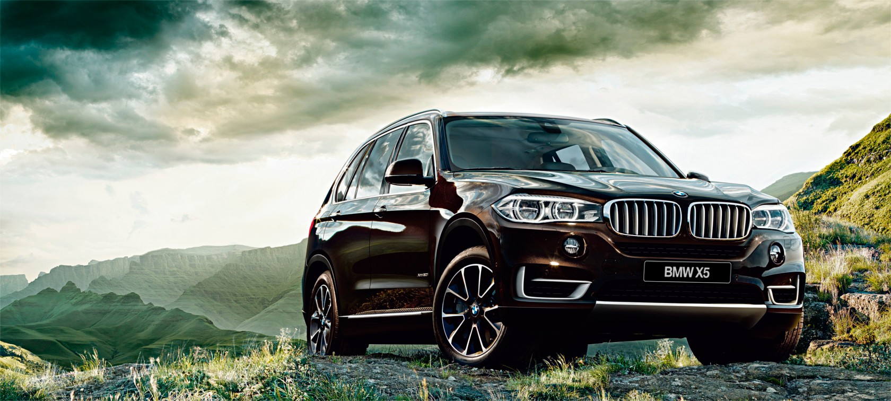
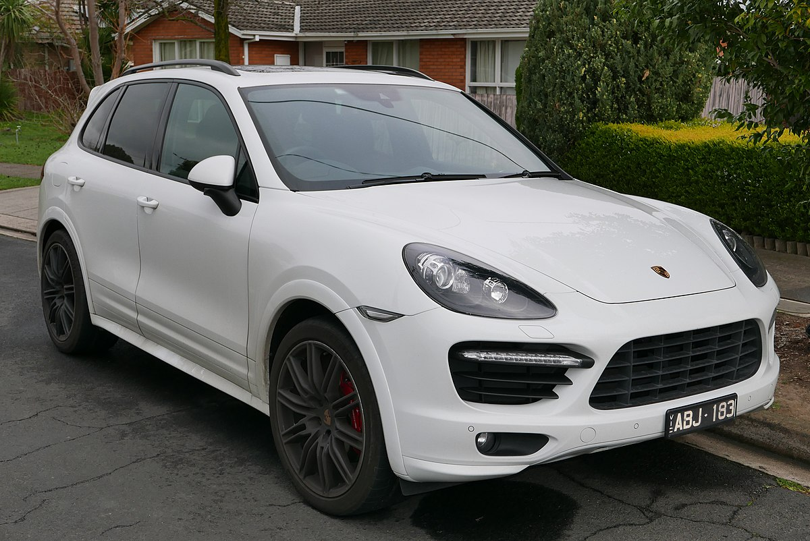

BMW X5 |
|
|---|---|
|  More images |
The BMW E53 is the first-generation BMW X5 mid-sized luxury crossover SUV. It was produced from 1999-2006[2] and was replaced by the BMW E70. The E53 was developed at a time when BMW still owned Land Rover and as such shares many components and designs with both the Land Rover Range Rover L322 model (specifically the Hill Descent System and Off Road Engine Management system) and the BMW E39 5 Series (specifically engines and electronic systems). The entire in-car entertainment system (Radio Function, Navigation System, Television and Telecommunications systems) are shared with other BMWs and L322. |
Porsche Cayenne |
|
|---|---|
|  More images |
The Porsche Cayenne is a mid-size luxury crossover sport utility vehicle produced by the German manufacturer Porsche since 2002, with North American sales beginning in 2003. It is the first V8-engined vehicle built by Porsche since 1995, when the Porsche 928 was discontinued. It is also Porsche's first off road variant vehicle since its Super and Junior tractors of 1950s, and the first Porsche with four doors. Since 2008, all engines have featured direct injection technology. |